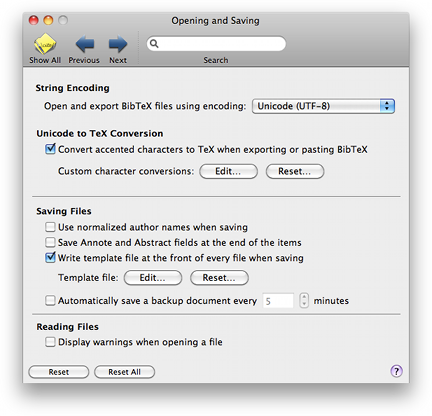

Files Files
Files FilesUsing the Files preference pane you can change the way BibDesk saves and reads BibTeX files.

String Encoding: This popup menu allows you to select the encoding used to open BibTeX files by double-clicking on them in the Finder.
Unicode to TeX Conversion: Characters will only be converted to TeX when this checkbox for character conversion is marked. Otherwise, they are written out as displayed in BibDesk. You can add Custom Character Conversions by clicking the "Edit..." button. The custom character conversions can be removed by clicking the "Reset..." button. Be careful though, as you can not undo this action.
The next four preference options control what data will be written when you save a BibTeX .bib file.
Use normalized author names when saving: If you select this checkbox, author names will be saved in the standard BibTeX form 'von Last, Jr, First' in the .bib file. Note that author names containing macros will always be saved as they are entered, even if you select this option.
Save Annote and Abstract fields at the end of the items: Selecting this option will ensure that the Annote and Abstract fields of any item is saved at the end of the record for that item in the BibteX file. As these fields can be long, choosing this option can restrict data loss on systems with restricted internal memory.
Write template file at the front of every file when saving: If you select this option, the template file will be written at the front of every BibTeX file when it is saved. You can view and edit the template file by clicking the "Edit..." button. You can reset the template file to the default by clicking the "Reset..." button. Be careful though, as you can not undo this action.
Automatically save a backup document: Checking this option lets BibDesk automatically save a backup of the open bibtex databases, so you won't loose your changes. You can choose how often BibDesk saves a backup.
Display warnings when opening a file: If you check this option, the warnings and errors will be shown automatically when you open a file that contains errors. Note that you can always check the errors and warning by showing the Error Panel, as described in Getting More Help.
| Custom Character Conversions |